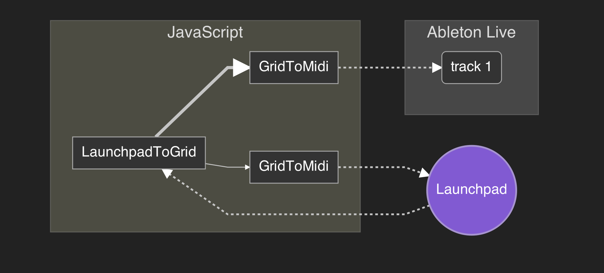
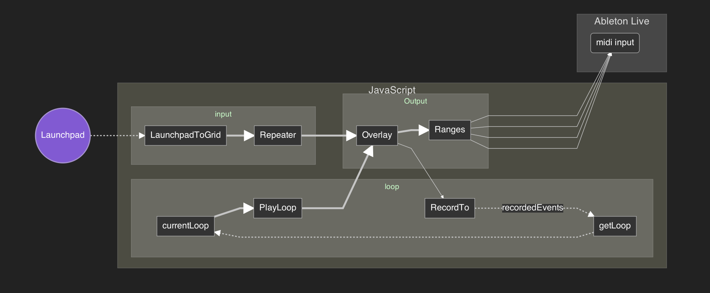

I Play the JavaScript
by @MattMcKegg
Hey, I'm Matt from New Zealand.
I make music with computers.
I have been using computers to make music for nearly 15 years.
Today I'm going to talk about my musical journey, and how I started using JavaScript to enhance my live performances, and what drove me to start writing my own music software called Loop Drop.
It's pretty much all live demos from here on in. Wish me luck :)
Computer Music
This is Ableton Live. And here is a song I made. It was not recorded, it was drawn. Note by note. This is what separates computer music, from computer recording.
Painted, not played.
You are master of time.
This is how the vast majority of electronic music is created today. Elements of this are also used in most other genres too. Less and less popular music is being recorded, instead it is being painted.
A little bit internet famous.
http://lunarmusic.net/album/hybrid-awaken
In 2006, I released my first album on the internet. It was just a collection of stuff I'd been working on for the years previous. I put up a website with some artwork, and a streaming player, with a great big free download button. Not sure quite how this happened, but somehow, it got picked up by a music blog. I guess bedroom composers were less common in those days? Next minute the link hit StumbleUpon, and I started getting hundreds of visitors every day. Dozens of people were downloading my album. I started to receive fan mail.
There were requests from people all over the world asking me to come play live.
But how do you play computer music live?
There's really only two options.
Recruit a bunch of musicians and perform every part for real?
That could be really cool, and a lot of fun! But oh, the cost. And it would be completely different, possible much better. But it's not computer music.
DJ it!
This is a very common strategy. People just wanna hear your tunes! Why not just push play and twiddle knobs? For bonus points, you could create loops of all the individual parts of your song, trigger those live, and maybe play the synth line, or percussion using a midi controller.
So many electronic musicians do this. They have a whole bunch of knobs and twiddles and complexity, but they are basically just DJing their bedroom/studio compositions (at most remixing). Minus the ordering and effects (filters, stutters, etc), they're stuck with whatever they painted in the studio.
This is what I started trying to do around 2010. I bought myself a Novation Launchpad, and tried to use it with Ableton Live and a midi keyboard.
I want to feel like I'm playing an instrument.
A guitarist can just sit down and jam out, I wanted that kind of experience.
It took me so much effort to prepare my live sets. I had to mix down all the individual parts, cram them all into one project. And then when it came to play live, there was very little flexibility, and I'd end up making mistakes of a technical nature and be far too focused on remember the correct sequence trigger.
JavaScript to the rescue!
After my disappointing attempt at live computer music in 2010 and 2011, I started experiment with writing my own node.js hackery for processing midi.
What is Midi?
Musical Instrument Digital Interface
It's a protocol developed way back in the 1980s allowing musicians to connect various different musical devices together. It allowed one device to trigger another devices sounds. You could connect your keyboard to an advanced sound module, or a sequencer to your synthesizer. In these days, the use of the computer would be the opposite way around to today. You would be sending MIDI to a synthesizer, sampler.
Important to note that MIDI is now mostly unrelated from .midi files.
midi-stream
https://github.com/livejs/midi-stream
This module let's you connect to midi devices in Node.js and the browser (via Web MIDI).
var MidiStream = require('midi-stream')
var keyboard = MidiStream('LPK25', {
normalizeNotes: true
})
keyboard.on('data', console.log)
virtual midi port
We can also create virtual midi keyboards. It will show up in our music software as if it is hardware connected to the computer, but we can send whatever messages we want.
Looking at the output from my midi keyboard, I can see what to send to make music play in Ableton Live from javascript.
var MidiStream = require('midi-stream')
var output = MidiStream('JAVASCRIPT MUSIC', {
virtual: true
})
function play(note, at, duration) {
setTimeout(() => output.write([144, note, 127]), at * 1000)
setTimeout(() => output.write([144, note, 0]), (at + duration) * 1000)
}
play(48, 2, 0.7)
play(55, 3, 0.7)
play(60, 4, 2)
Launchpad is Midi too!
It may not look like a keyboard, but it's buttons are just arranged differently.
var launchpad = MidiStream('Launchpad Mini')
launchpad.on('data', console.log)
Light up the buttons
Sending the same message back to the launchpad will light up that particular button.
launchpad.on('data', (data) => launchpad.write(data))
observ
Streams can be okay for working with, but I prefer observables. This module is my favorite approach. It's "just javascript".
http://github.com/Raynos/observ
var Observ = require('observ')
var value = Observ()
value.set(100)
console.log(value()) //=> 100
What makes it observable?
value(function (newValue) {
// is called every time the value changes
console.log(newValue) //=> 200, 300
})
value.set(200)
value.set(300)
array-grid
We can set any object as a value, including an array grid.
http://github.com/mmckegg/array-grid
1 2 3 4
5 6 7 8
9 10 11 12
var ArrayGrid = require('array-grid')
var grid = ArrayGrid([1, 2, 3, 4, 5, 6, 7, 8, 9, 10, 11, 12], [3, 4])
grid.get(0, 1) //=> 2
grid.get(1, 2) //=> 7
grid.get(2, 3) //=> 12
grid.data //=> [1, 2, 3, 4, 5, 6, 7, 8, 9, 10, 11, 12]
Observable Launchpad Grid
Let's convert that midi stream to an observable grid.
var Observ = require('observ')
var ArrayGrid = require('array-grid')
function LaunchpadToGrid (midiPort) {
var obs = Observ(ArrayGrid([], [8, 8]))
midiPort.on('data', (data) => {
var col = data[1] % 16
var row = Math.floor(data[1] / 16)
if (col < 8 && row < 8) {
var newValue = ArrayGrid(obs().data.slice(), obs().shape)
newValue.set(row, col, data[2])
obs.set(newValue)
}
})
return obs
}
Let's try it out!
var inputGrid = LaunchpadToGrid(launchpad)
inputGrid((grid) => {
var result = ''
for (var row = 0; row < grid.shape[0]; row++) {
for (var col = 0; col < grid.shape[1]; col++) {
result += (' ' + (grid.get(row, col) || 0)).slice(-3) + ' '
}
result += '\n'
}
console.log(result)
})
Convert grid back to midi
function GridToMidi (port, fn) {
var obs = Observ()
var outputValues = {}
obs(function (grid) {
if (grid) {
var length = grid.shape[0] * grid.shape[1]
for (var i = 0; i < length; i++) {
var value = grid.data[i] || 0
var message = fn(value, i)
if (message) {
var key = message[0] + '/' + message[1]
var lastValue = outputValues[key] && outputValues[key][2] || 0
if (lastValue !== value) {
outputValues[key] = message
port.write(message)
}
}
}
} else {
Object.keys(outputValues).forEach(function (key) {
var lastMessage = outputValues[key]
if (lastMessage && lastMessage[2]) {
port.write(outputValues[key] = [lastMessage[0], lastMessage[1], 0])
}
})
}
})
return obs
}
Send it to Ableton Live
var outputGrid = GridToMidi(output, (value, i) => {
return [144, 36 + i, value]
})
inputGrid(outputGrid.set)
Send it to Launchpad (lights)
var outputLights = GridToMidi(launchpad, (value, i) => {
var id = (i % 8) + (Math.floor(i / 8) * 16)
return [144, id, value]
})
inputGrid(outputLights.set)
So far:

observ-transform
Tools for transforming observables, works like transform streams.
http://github.com/mmckegg/observ-transform
var Transform = require('observ-transform')
var connect = require('observ-transform/connect')
var send = require('observ-transform/send')
Clean up using connect and send
connect(
LaunchpadToGrid(launchpad),
send(
GridToMidi(output, (value, i) => { return [144, 36 + i, value] }),
GridToMidi(launchpad, (value, i) => {
var id = (i % 8) + (Math.floor(i / 8) * 16)
return [144, id, value]
})
)
)
There, much nicer. A lot easier to see the signal flow now.
Range Transform
I want to be able to play multiple instruments at the same time using the one launchpad. This transform will allow me to grab parts of the grid and send it to different tracks.
Observe a subset of the grid.
function Range (shape, offset) {
return Transform((input) => {
return input && input.getRange(shape, offset)
})
}
Map ranges to different tracks
145, 146, etc specify different input channels in midi. We can connect these to different tracks in Ableton Live. 36 corresponds to C1.
connect(
LaunchpadToGrid(launchpad),
send(
connect(Range([3, 8], [0, 0]), GridToMidi(output, (value, i) => {
return [144, scale(i, -1), value]
})),
connect(Range([2, 8], [3, 0]), GridToMidi(output, (value, i) => {
return [145, scale(i, -1), value]
})),
connect(Range([1, 8], [5, 0]), GridToMidi(output, (value, i) => {
return [146, scale(i, 0), value]
})),
connect(Range([1, 4], [6, 0]), GridToMidi(output, (value, i) => {
return [147, 36 + i, value]
})),
connect(Range([1, 4], [7, 0]), GridToMidi(output, (value, i) => {
return [148, 36 + i, value]
})),
connect(Range([2, 4], [6, 4]), GridToMidi(output, (value, i) => {
return [149, scale(i), value]
})),
GridToMidi(launchpad, (value, i) => {
var id = (i % 8) + (Math.floor(i / 8) * 16)
return [144, id, value]
})
)
)
function scale (pos, octave) {
var notes = [ 0, 2, 3, 4, 5, 7, 9, 10 ]
var scalePosition = Math.floor(pos % notes.length)
var multiplier = Math.floor(pos / notes.length) + (octave || 0)
var note = notes[scalePosition]
return note + (multiplier * 12) + 63
}
Looping, repeating, etc?
To do anything involving time, we first need to know what time it is.
Midi Clock
Almost all midi compatible sequencers have the ability to send (or recieve) a midi clock. This allows one app to sync to the tempo and timing of another.
var midiClock = MidiStream.openInput('CLOCK INPUT', {
virtual: true,
includeTiming: true
})
midiClock.on('data', console.log)
Observable position
Let's convert the ticks to a running position that we can use later in our transforms.
function PositionFromMidiClock (port) {
var obs = Observ(0)
var ticks = 0
port.on('data', (data) => {
if (data[0] === 248) {
ticks += 1
obs.set(ticks / 24)
}
})
return obs
}
What time is it?
var currentPosition = PositionFromMidiClock(midiClock)
currentPosition(console.log)
Repeater
Now that I'm triggering all of these instruments with just my two hands, it would be nice if I didn't have to play exactly in time. Also it's one of the defining sounds of computer music, that perfectly synced beat.
Held buttons will trigger continuously synced with the clock at the rate specified.
function Repeater (currentPosition, rate) {
var currentFrame = null
return Transform((input, args) => {
if (args.rate) {
var pos = (args.currentPosition % args.rate)
if (pos === 0) {
currentFrame = input
}
return (pos / args.rate) < 0.5 ? currentFrame : null
} else {
return input
}
}, {
rate: rate,
currentPosition: currentPosition
})
}
Hook it up!
connect(
LaunchpadToGrid(launchpad),
Repeater(currentPosition, 1 / 2)
send(...)
)
Recorder
It would be really nice if I could lock in a sequence if I like what I hear. Let's add a recorder that records all events ready for use later.
function RecordTo (target, currentPosition) {
var obs = Observ()
obs((value) => {
var last = target[target.length - 1]
if (last && last.at === currentPosition()) {
target.pop()
}
target.push({
at: currentPosition(),
value: value
})
})
return obs
}
Loop recorded events
Whenever we play something that we like, and want to hear again, we can press a loop button, and whatever we just played will start to loop.
function getLoop (start, length) {
return {
length: length,
events: recordedEvents.filter((event) => {
return event.at >= start && event.at < start + length
}).map((event) => {
return {
at: event.at % length,
value: event.value
}
}).sort((a, b) => { return a.at - b.at })
}
}
Create loop
var loopLength = Observ(8)
var currentLoop = Observ()
launchpad.on('data', function (data) {
if (data[0] === 176 && data[1] === 104 && data[2]) {
currentLoop.set(
getLoop(currentPosition() - loopLength(), loopLength())
)
}
})
Loop player
function PlayLoop (currentPosition) {
return Transform((input, args) => {
if (input && input.events.length) {
var value = input.events[input.events.length - 1].value
for (var i = 0; i < input.events.length; i++) {
if (input.events[i].at > args.currentPosition % input.length) {
return value
} else {
value = input.events[i].value
}
}
return value
}
}, { currentPosition: currentPosition })
}
We want this:

Here's one I prepared earlier.
I've gone ahead and implemented the looper and added a bunch of controls for manipulating the loop. Clear, undo, redo, stutter, suppress. The ability to remove notes. Everything is done with observ-transform. See midi-looper.js.
What about Web Audio?
This is cool and all, but why are we even using this Ableton Live thing, when we could just use Web Audio?
audio-slot
It can be a lot of fiddly work using the Web Audio API directly. This module makes it easier to create audio graphs and retriggering sounds.
http://github.com/mmckegg/audio-slot
var AudioSlot = require('audio-slot')
AudioContext+
We need to create a context object that includes all of the different nodes we want to use in our graph.
var context = {
audio: new AudioContext(),
nodes: {
osc: require('audio-slot/sources/oscillator'),
env: require('audio-slot/params/envelope'),
filter: require('audio-slot/processors/filter')
}
}
Sound!
var slot = AudioSlot(context)
slot.set({
sources: [
{ node: 'osc',
shape: 'sawtooth',
amp: { node: 'env', attack: 1, release: 1, value: 0.4 }
}
],
processors: [
{ node: 'filter',
frequency: { node: 'env', value: 20000, decay: 0.5, sustain: 0.01 }
}
]
})
slot.connect(context.audio.destination)
slot.triggerOn(2)
slot.triggerOff(4)
budo
A dev server for rapid prototyping that automatically "browserifies" your code.
https://github.com/mattdesl/budo
Let's try it out:
$ npm install budo -g
$ budo web-audio-looper.js:bundle

I've taken everything so far in this talk, added a bunch of css and html and put it into an app.
https://youtu.be/fQWRoLf7bns?t=1009
Loop Drop
A looper, modular synth and sampler designed for improvisation and live performance.
$ npm install loop-drop -g
$ loop-drop
Electron
My app is written in JavaScript and is powered by Web Audio and Web MIDI, but it runs on the desktop and has access to your file system.
Build cross-platform desktop applications in JavaScript and HTML+CSS.
DESTROY WITH SCIENCE
My live experiments
https://soundcloud.com/destroy-with-science
I have now developed a new method of composing music. Rather than painting all of my music by hand and then trying to figure out how to play it live, I instead start live. I just play what I want to hear, and record everything. When I like what I hear, I release it.
I have no idea what I am doing!
When I started this project I barely new anything. If you have a creative problem that needs solving, do give JavaScript a try.
Just start writing.
JavaScript makes a great sketchbook!
Don't worry about frameworks or best practices. Get your ideas out there. Solve small problems for yourself. Scratch your own itch.
With a creative JavaScript project like Loop Drop, it is easy to get carried away on interesting sidetracks, but as you continue, keep reminding yourself what problem you are trying to solve.
Rewrite constantly.
But, not all at once!
Don't be afraid to completely rewrite things, just don't try and tackle the whole project at once.
This is very easy to do if you follow a modular pattern.
Thanks for listening!
- Any questions? Tweet @MattMcKegg
- View notes at github.com/mmckegg/jsconfasia-talk-2015
- To hear more visit soundcloud.com/destroy-with-science